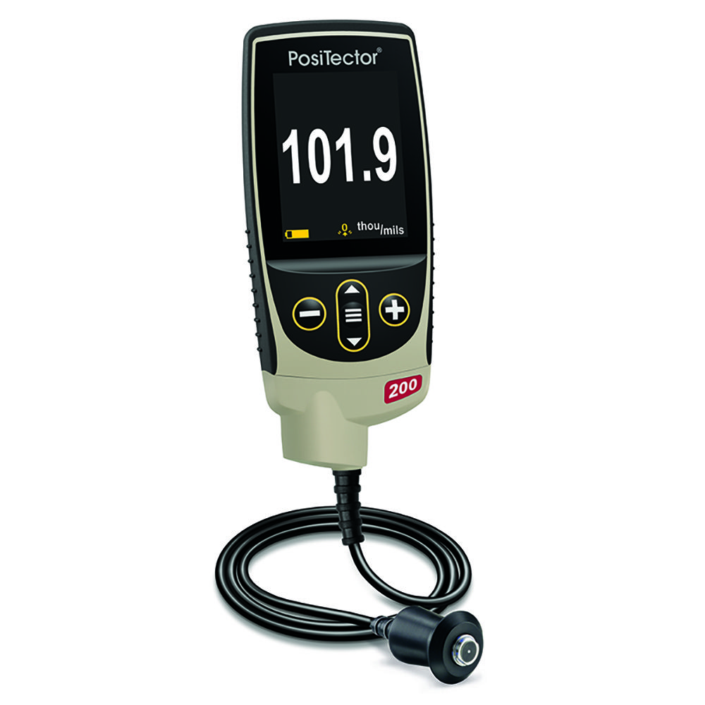
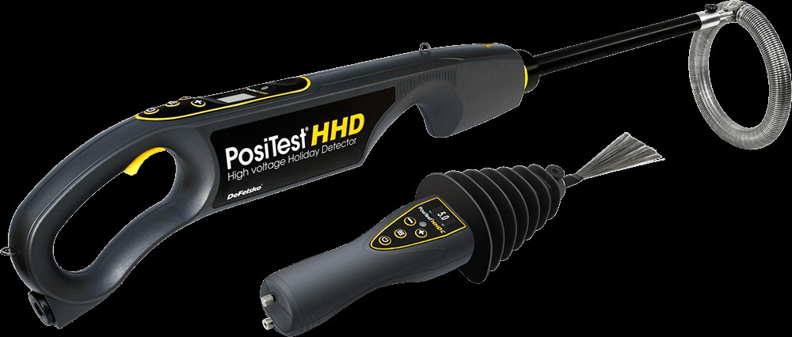
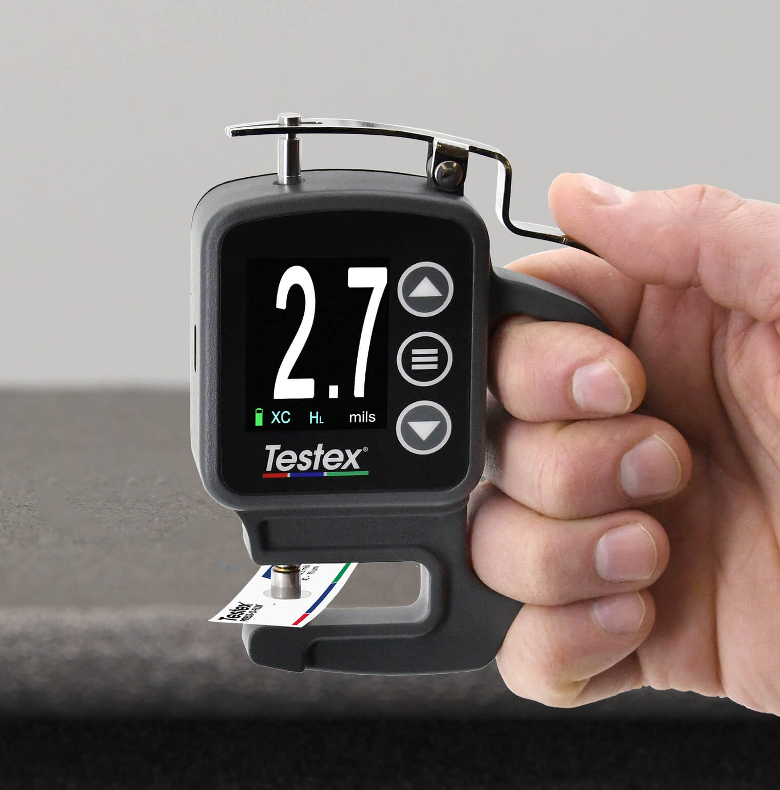

Curated tool list used by Md Jakir Hossain – BGAS-CSWIP Grade-II Painting Inspector & NDT Level-2.
Used to measure cured coating thickness on steel structures, pipelines, tanks and equipment to verify compliance with project specifications and ISO / SSPC / NACE requirements.
Detects pinholes, holidays, discontinuities and leaks in protective coatings on tanks, pipelines and buried structures – especially for high-build and lining systems.
Measures surface roughness after abrasive blasting to ensure the correct anchor pattern for coating adhesion. Often used with ISO 8503 / SSPC visual comparators.
